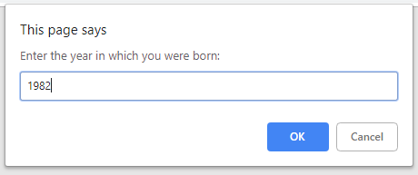
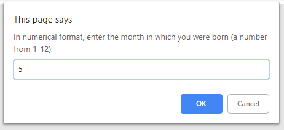
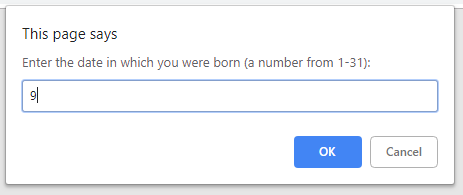
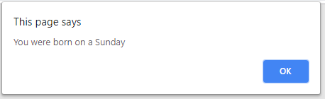
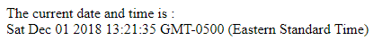
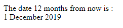

JavaScript was a fun language to learn. As a student learning the language, my focus was on client-side JavaScript programming techniques. As such, I learned how to integrate JavaScript with HTML to bring interactivity to web pages. Examples of this can be found in the Birth Date program, the Current Date program, and the Future Date program.
Birth Date Program
The following program prompts a user to enter their date of birth, and prints to the screen what day of the week they were born. This program uses variables and operators to execute the code.In the first step of this program, the user is asked for the year, month, and date in which they were born, as seen below:



After all three variables have been entered, the day of the week in which they were born is printed to the screen:

I wrote the following code to execute this program:
<!DOCTYPE html> <html lang="en"> <head> <title>Birth Date Program</title> </head> <body> <script> var daysofWeek = ["Sunday", "Monday", "Tuesday", "Wednesday", "Thursday", "Friday", "Saturday"]; var year = prompt("Enter the year in which you were born: "); var month = prompt("In numerical format, enter the month in which you were born (a number from 1-12): "); var date = prompt("Enter the date in which you were born (a number from 1-31): "); var birthDate = new Date(year, month - 1, date); alert("You were born on a " + (daysofWeek[birthDate.getDay()])); </script> </body> </html> </p>
Current Date Program
In another example, I used the JavaScript Date object to write the current date and time into a web page:
I used the following code to execute this program:
<!DOCTYPE html> <html lang="en"> <head> <title>Current Date Program</title> </head> <body> <script> var currentDate = new Date(); document.write("The current date and time is : <br>"); document.write(currentDate); </script> </body> </html>
Future Date Program
Finally, I used the Date object to calculate the date 12 months from now and write this into a web page:
I used the following code to execute this program:
Return to top of page<!DOCTYPE html> <html lang="en"> <head> <title>Future Date Program</title> </head> <body> <script> var months = ["January", "February", "March", "April", "May", "June", "July", "August",
"September", "October", "November", "December"]; var futureDate = new Date(); futureDate.setMonth(futureDate.getMonth() + 12); document.write("The date 12 months from now is :<br>" + futureDate.getDate()); document.write(" " + months[futureDate.getMonth()]); document.write(" " + futureDate.getFullYear()); </script> </body> </html>